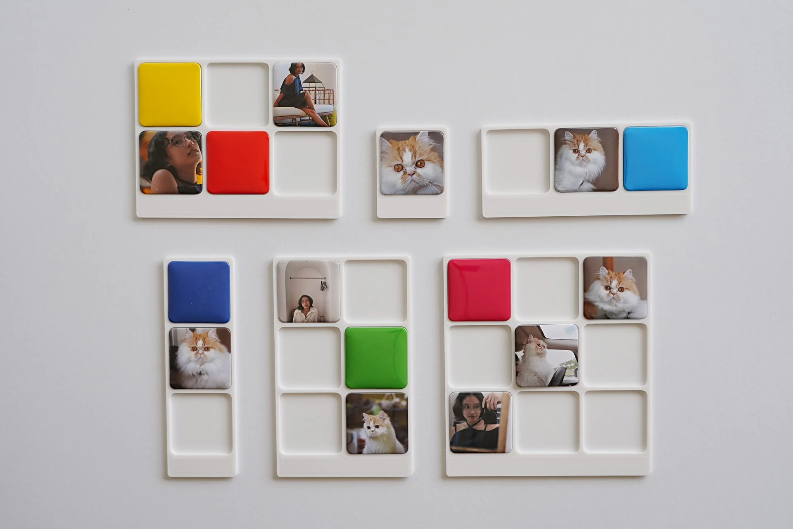

| Holding | Market value |
|---|---|
| Nestlé SA | 12,480.00 |
| Roche Holding | 8,215.50 |
| Zurich Insurance | — |
| Novartis AG | 4,092.00 |
Enterprise banking · Avaloq
The Art of Nothing
One empty cell meant five things to five teams. One rule, shipped by seven roles.
1.4.3 Contrast (minimum) Pass
2.4.7 Focus visible Pass
1.4.11 Non-text contrast 2.9:1
2.5.8 Target size Pass
Accessibility · Avaloq
Break It Yourself
The directive set the standard, not the method. I built the team's inspection sheet.
What kind of work are you looking for?
I'm not sure yet
Then let's start with what you're good at.
Branch · unresolved intent
Conversational · Plan International
TESSA
A career coach for young Filipino jobseekers. I designed the engine under the dialogue.

Physical product · Co-founder
SariSari Snaps
A pocket-sized idea from Mount Pulag became one system for nine photo frames.
Step 3 of 5 Colour
Commerce · Configurator & build
True Size
Orders were specified in Messenger threads. I designed and built the configurator that structures them.
Speed Tank$25.99
Colour
Size—
Please select size
Retail · Component & state library
The Unhappy Path
Began as six page comps. Ended as the component-and-state library behind them.